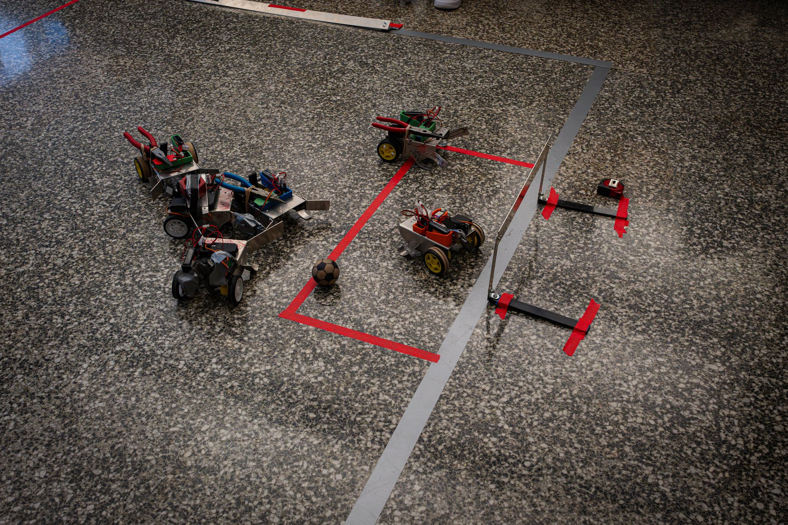

Discover Mechanical Engineering (DME)

Design methodology
Design for manufacturing and assembly (DFMA)
Design for novice builders
Program management
RoleHead Coordinator
ProgramDiscover Mechanical Engineering (DME), MIT
TimelineMarch – August 2026
Tools
[NEEDS INPUT]
As Head Coordinator of Discover Mechanical Engineering (DME), an MIT pre-orientation program for incoming first-year students, I redesigned the program's soccer-robot build challenge for the first time since 2016. The new robot is smaller, simpler to fabricate, and built around custom ESP32 PCBs, and 30+ students — many with no build experience — finished it with time to spare in a program one day shorter than before. I also co-managed an $11K budget, delivering under budget.
Context/Motivation
DME is a pre-orientation program for incoming MIT first-years, built around a three-day challenge in which students build soccer-playing robots, each driven by two DC motors with a servo-driven paddle kicker. The robot design hadn't changed since 2016, and a new schedule meant the program had to run a full day shorter.
Problem Framing
I set out to make the robot smaller, simpler, and ready for custom electronics — without losing the core learning experience for students who, in many cases, had never built anything before. The redesign also had to fit the program's budget and the shortened schedule.
Process
Making it smaller
A smaller robot needs less material, which helps the budget, and could make gameplay more fun: less crowding on the field and faster bots.
Making it simpler
I applied DFMA principles to cut fabrication time while keeping the core learning: removing redundant cuts, taking advantage of collinear features to reduce the number of scribes and punches, and reducing toolhead changes.
Designing around custom PCBs
In previous years, receivers and controllers had consistent pairing issues, were expensive, and regularly blew out. My predecessor had worked on custom PCBs using ESP32 chips that connect to students' phones over Bluetooth, eliminating future costs for motor drivers, receivers, and controllers — but they arrived months late and missed the previous year's program. I redesigned the robot with these boards in mind.
Room for Improvement
[NEEDS INPUT]
Outcome
- All 30+ students completed their robots, with time to spare
- Program shortened by a full day
- $11K budget co-managed; delivered under budget
Reflection
[NEEDS INPUT]